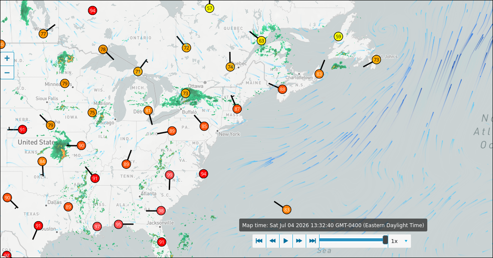
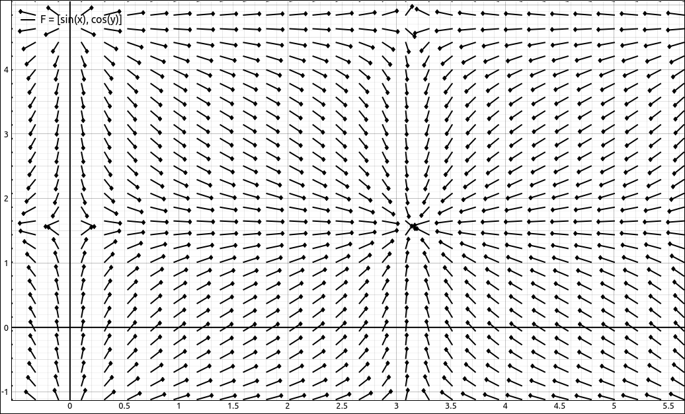
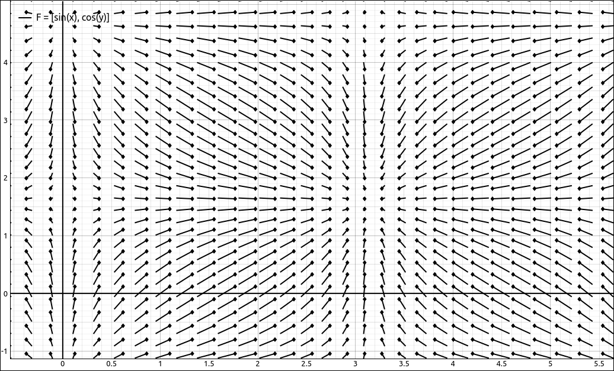
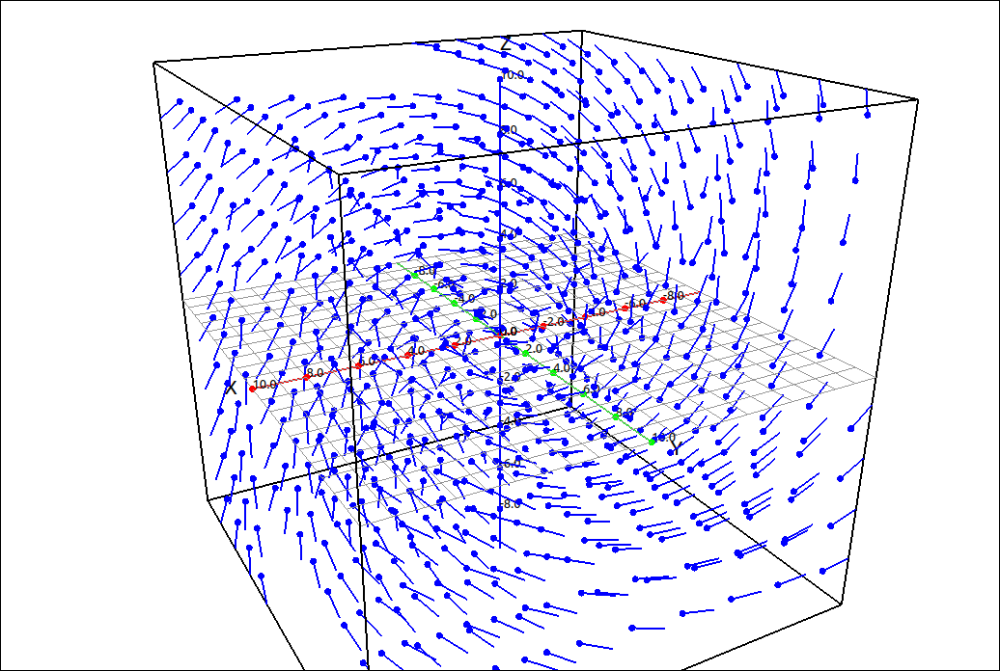
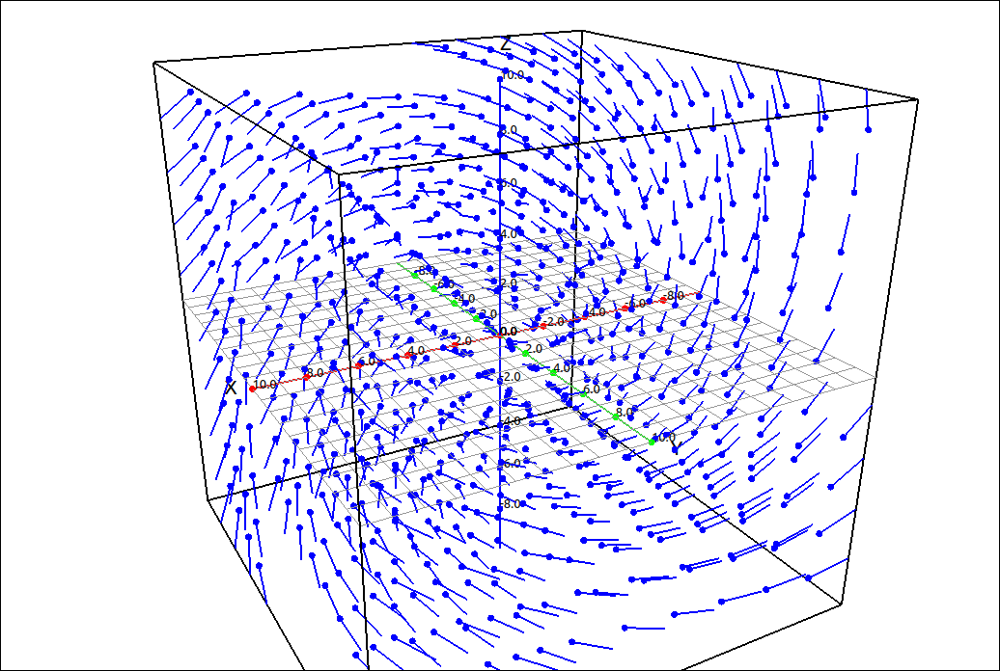
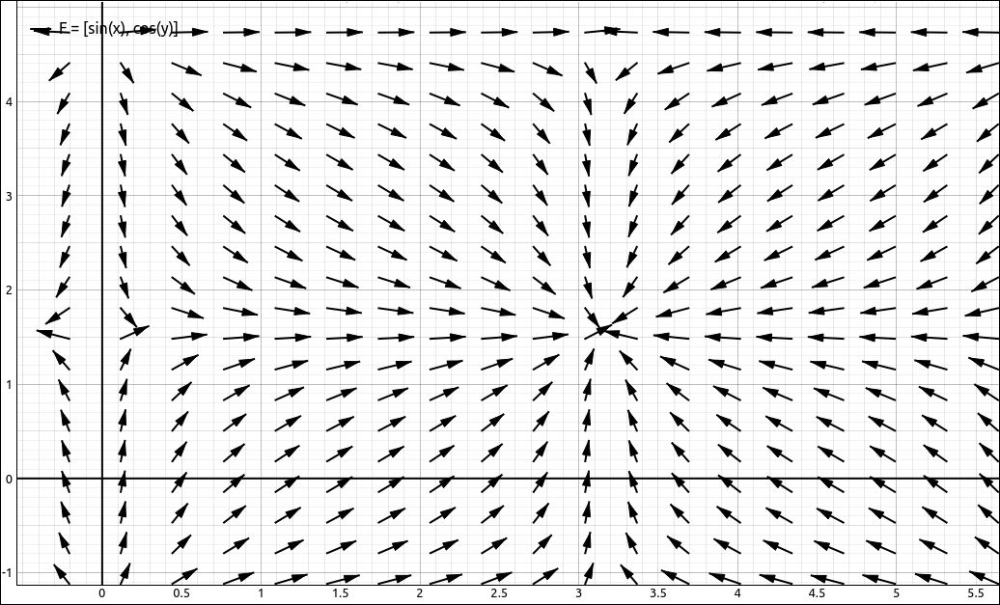
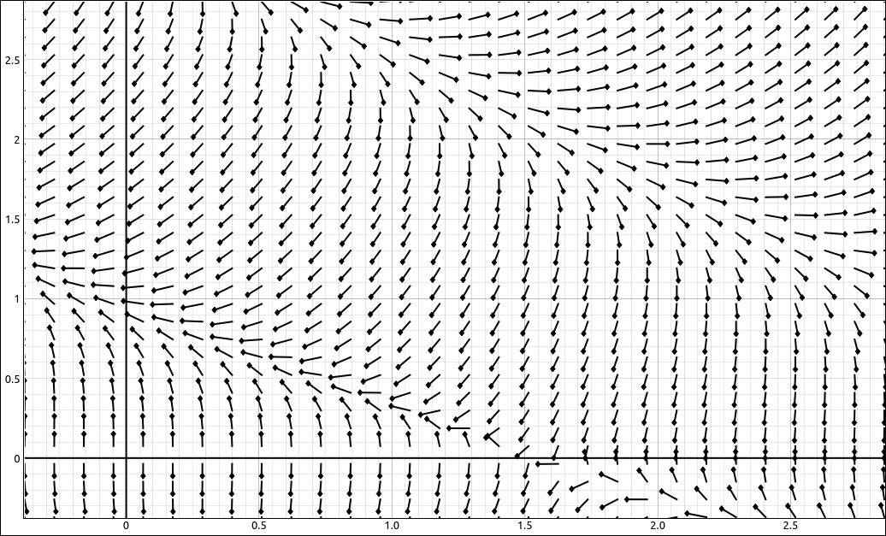

Vector Fields#
You see vector fields almost every day. If you turn on a weather report on the television or look it up on a web site you may see graphs that have a grid of arrows that represent wind direction, storm fronts, jet stream, etc. These are examples of vector fields. Below is an image of a vector field showing wind direction at a set of weather stations in the eastern half of the US along with a vector field of ocean currents in the Atlantic at 1:32 PM EST on July 4, 2026.

1:32 PM EST on July 4, 2026#
Vector Fields#
Definition: Vector Fields in \(\mathbb{R}^2\) and \(\mathbb{R}^3\)
A vector field in \(\mathbb{R}^2\) is a function
that assigns each point in a region D in \(\mathbb{R}^2\) a vector in \(\mathbb{R}^2.\)
A vector field in \(\mathbb{R}^3\) is a function
that assigns each point in a region D in \(\mathbb{R}^3\) a vector in \(\mathbb{R}^3.\)
The functions P, Q, and R are called component functions for the vector field.
Example: Vector Fields in \(\mathbb{R}^2\)#
CLAE#
In this example we will look at the vector field, \(\mathbf{F}(x, y) = \sin(x) \mathbf{i} + \cos(y) \mathbf{j} = (\sin(x), \cos(y)).\)
Input the expression for the vector field,
[sin(x),cos(y)]
Note that you can also put this into the vector input for a column vector representation,
Either will work fine here. Click and drag this to the 2D graphics window and zoom in a bit, you should see,

\(\mathbf{F}(x, y) = \sin(x) \mathbf{i} + \cos(y) \mathbf{j}\)#
In this image the arrowhead is a small diamond at the end of the vector which shows the direction of the vector at each point on the vector grid. CLAE has many options for viewing the field in its properties. You can increase or decrease the number of divisions in the grid as well as choose between four scaling types. The default scaling type is the scale to window, seen above, which renders each vector as equal lengths. This shows the directions but does not show the relative lengths (or speeds) of the field. If you change the mode to scale to maximum vector you will see,

\(\mathbf{F}(x, y) = \sin(x) \mathbf{i} + \cos(y) \mathbf{j}\)#
In this image all of the vectors are scaled relative to the longest vector in the field. This shows the directions and relative lengths or speeds of the vectors. The difficulty with this scaling mode is that if there is a vector in the field that overwhelms the others then most of the vectors in the field show up as just dots. It is always good to view the field in these two modes to get a feel for the field. The other two modes can also give some visual information for the field depending on the field and the viewing window.
Example: Vector Fields in \(\mathbb{R}^3\)#
CLAE#
In this example we will look at the vector field, \(\mathbf{F}(x, y, z) = y \mathbf{i} + z \mathbf{j} + x \mathbf{k} = (y, z, x).\)
Input the expression for the vector field,
[y,z,x]
Note that you can also put this into the vector input for a column vector representation,
Either will work fine here. Click and drag this to the 3D graphics window, you should see,

\(\mathbf{F}(x, y, z) = y \mathbf{i} + z \mathbf{j} + x \mathbf{k}\)#
In this image the arrowhead is a small circle at the end of the vector which shows the direction of the vector at each point on the vector grid. CLAE has many options for viewing the field in its properties. You can increase or decrease the number of divisions in the grid as well as choose between four scaling types. The default scaling type is the scale to window, seen above, which renders each vector as equal lengths. This shows the directions but does not show the relative lengths (or speeds) of the field. If you change the mode to scale to maximum vector you will see,

\(\mathbf{F}(x, y, z) = y \mathbf{i} + z \mathbf{j} + x \mathbf{k}\)#
In this image all of the vectors are scaled relative to the longest vector in the field. This shows the directions and relative lengths or speeds of the vectors. The difficulty with this scaling mode is that if there is a vector in the field that overwhelms the others then most of the vectors in the field show up as just dots. It is always good to view the field in these two modes to get a feel for the field. The other two modes can also give some visual information for the field depending on the field and the viewing window.
Note
For vector fields in \(\mathbb{R}^2\) there is an option to display vectors, nicer vector images in the options. This will produce a graph like the one below.

Vector Option#
The reason we default the head of the vector to a small diamond is so that the program has a better response in animations and slider changes. The vector graphing option may produce some sluggish response when using sliders. The vector fields in \(\mathbb{R}^3\) do not have a vector rendering option and always use the circle to represent the head of the vector.
Gradient Fields#
A type of vector field that is very useful is a gradiant field. This is simply the vector field produced by the gradiant of a multivariable function.
Definition: Gradient Fields
A gradiant field is the vector field produced by the gradiant of a multivariable function. Specifically,
or
Not all vector fields are gradiant fields, in fact most are not. If they are then the field will have some nice properties. Hence we will give a name to them.
Definition: Conservative Vector Fields
A vector field \(\mathbf{F}\) is a conservative vector field if there exists a multivariable function \(f\) such that \(\mathbf{F} = \nabla f.\) If this is the case then the function \(f\) is called the potential function for the vector field \(\mathbf{F}.\) In addition, the potential function for a conservative vector field is unique in the sense that if \(f\) and \(g\) are two potential functions for the vector field \(\mathbf{F}\) then there is a constant \(C\) such that \(f = g+C.\)
Example: Gradient Field of \(f(x, y) = y^{2} \cos{\left(x + y \right)}\)#
CLAE#
Input the function,
y^2*cos(x + y)
Select Calculus > Vector Calculus > Gradiant, the result should be,
Click and drag this over to the 2D graphics window and you will see,

Gradient Field of \(f(x, y) = y^{2} \cos{\left(x + y \right)}\)#
As we mentioned above, most vector fields are not conservative. To determine if a vector field is conservative we need to find a function \(f\) such that \(\mathbf{F} = \nabla f.\) If such a function exists then the field is conservative and if we can show that no function exists then the field is not conservative. We can, however, show that a vector field is not conservative in an easier manner.
Theorem: The Cross-Partial Property of Conservative Vector Fields
If \(\mathbf{F}(x, y) = (P(x, y), Q(x, y))\) is a conservative vector field in \(\mathbb{R}^2\) then \(\displaystyle \frac{\partial P}{\partial y} = \frac{\partial Q}{\partial x}\)
If \(\mathbf{F}(x, y, z) = (P(x, y, z), Q(x, y, z), R(x, y, z))\) is a conservative vector field in \(\mathbb{R}^3\) then
From this theorem if we have a field where any of the cross-partials are not equal we know that the field is not conservative.
Example: \(\left( x + y^{2}, \ y \cos{\left(x \right)}\right)\)#
CLAE#
Input the two component functions,
x+y^2
and
y*cos(x)
Takin the partial of the first with respect to y and the second with respect to x we get
these are clearly not equal and hence the vector field is not conservative.